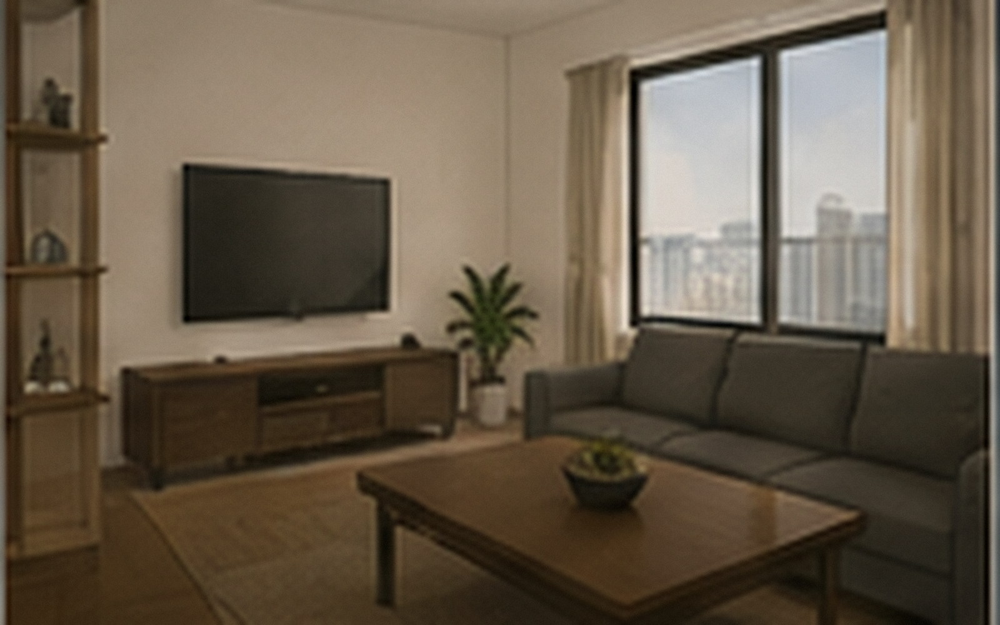
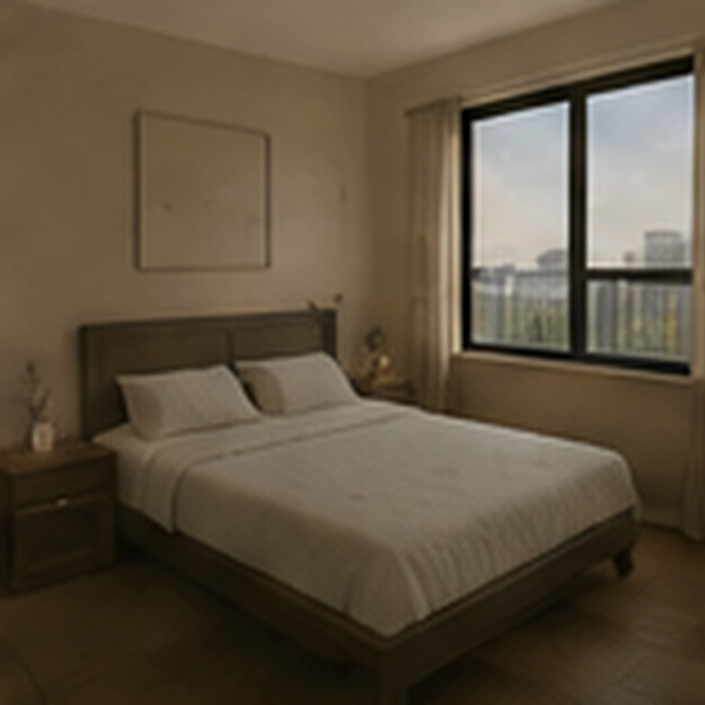
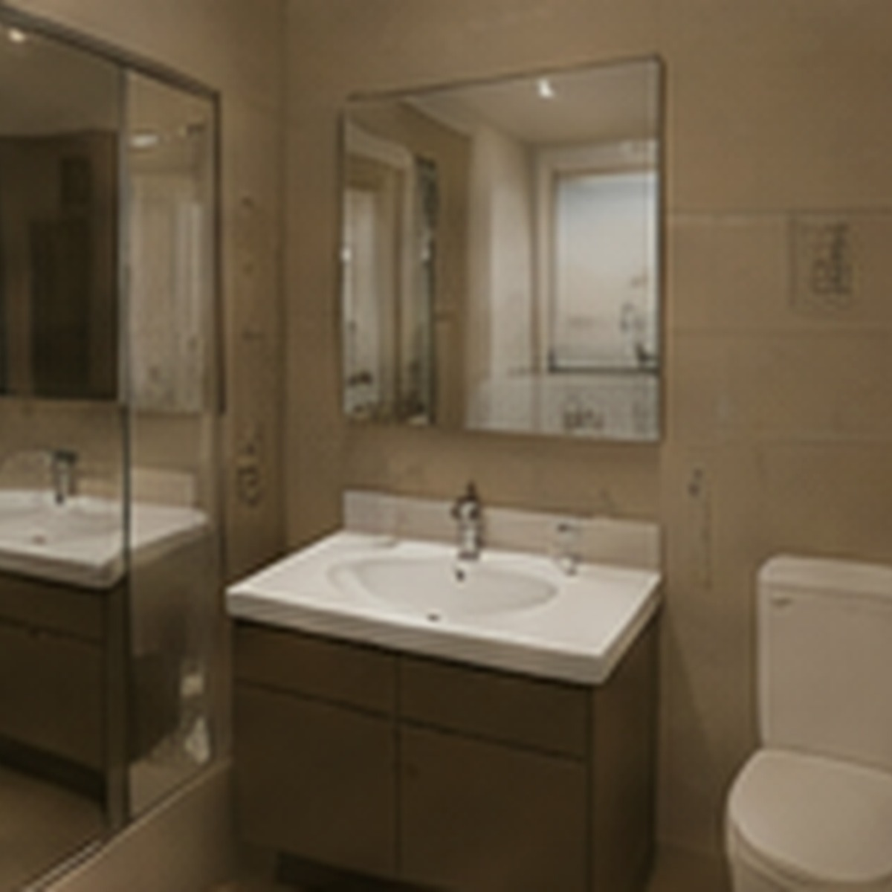

现房照片拍摄于 2026-08：客厅为东向采光面；卧室与卫生间为同套房源现况。可点击照片放大查看室内细节。
本周可预约
52㎡ · 两室一厅 · 东向
¥4,980/ 月
| 项目 | 说明 |
|---|---|
| 楼层 | A栋 14 层 / 共17层 |
| 面积 | 建筑使用面积约 52㎡ |
| 朝向 | 主要采光面向东 |
| 格局记录 | 2024 年完成格局优化，起居空间与储物区重新整理 |
| 设备 | 独立电表、燃气表；厨卫排风接入楼栋公共竖井 |
房间与设备
客厅采用低矮储物与活动家具，卧室预留 1.5m 床位。卫生间完成干湿区整理。厨卫排风为公寓原有公共系统的一部分，住户不得自行增加需要独立烟道的设备。
看房时可一并确认
现房家具和固定设备以交付清单为准；尺寸、窗体、水电表及设备位置可在现场与租赁顾问核对。
费用与居住规则
| 项目 | 标准 |
|---|---|
| 租期 | 12 个月起 |
| 押金 | 押一付一 |
| 物业服务 | 已包含在租金中 |
| 宠物 | 可申请登记，公共区域需牵引 |
| 网络 | 运营商光纤到户，住户自行办理 |
本页面内容最后更新于 2026-08-30